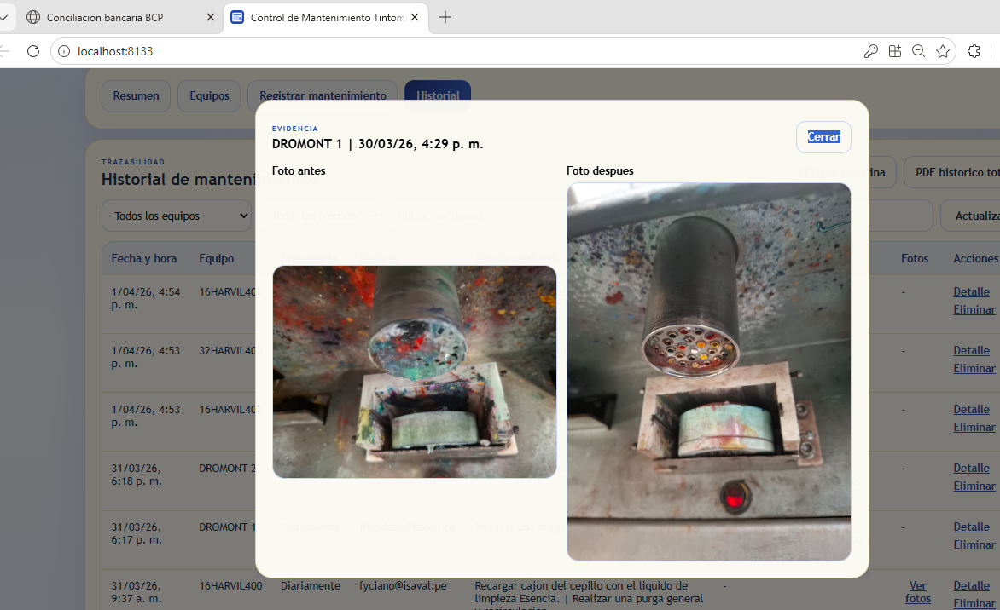

Tintometric equipment maintenance was often handled through isolated printed forms or informal routines, without a clear history, without continuous follow-up, and with heavy dependence on each operator’s judgment.
The piece proposes a frequency-based control system with technical checklist, owner, execution date, observations, and status, designed to start with standardized forms and later evolve into a centralized digital platform.
It defines a clear maintenance structure by equipment and by frequency.
It creates a history of interventions, states, and pending actions.
It reduces operational failures and unexpected stoppages through periodic control.
It provides documentary support for internal processes and certifications.
The proposal turns tintometric equipment maintenance into a controlled and repeatable process. It may start on paper, but it is already structured enough to be digitized and scaled without losing technical discipline.
